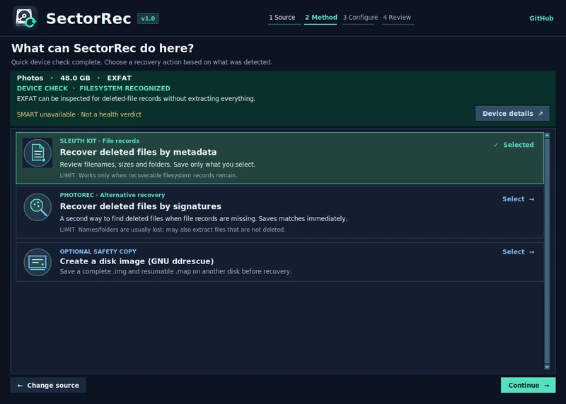
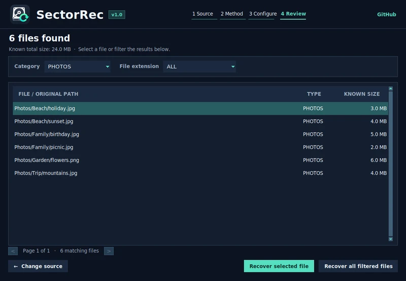
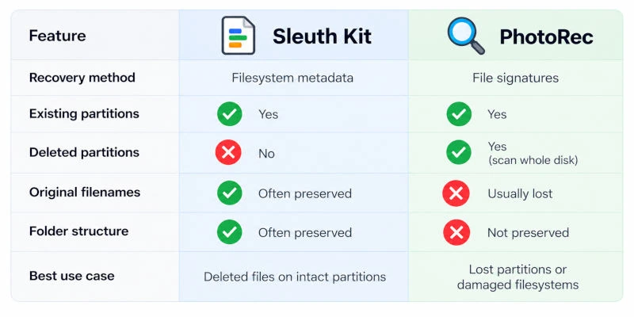
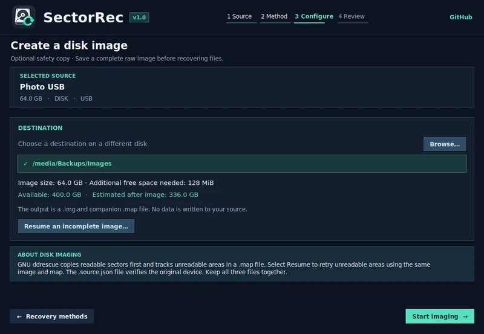
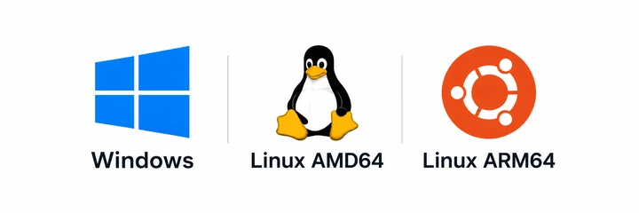

SectorRec · Free & open source
File recovery. Made simple.
Recover deleted files with a few guided steps. No technical knowledge or command line needed.
Free and open source for Linux and Windows. SectorRec helps you recover files from hard drives, USB sticks, SD cards and disk images, with clear explanations along the way.
Designed to be easy from the first screen
View full-size screenshot ↗
Select your drive, read what each method does, choose where to save the files and follow the progress in one window. SectorRec handles the commands for PhotoRec, The Sleuth Kit, TestDisk and GNU ddrescue behind the scenes.

- Choose the files you need. Browse and filter metadata results before extracting selected files.
- Scan an existing disk image. Open
.img,.dd,.rawor.binfiles as a source. - Resume an interrupted image. Keep the image, recovery map and source identity together.
- Inspect the device first. View device details and SMART information when available.
PhotoRec saves matching files during the scan; its live list monitors progress. SectorRec uses TestDisk for discovery without rewriting the partition table.
Your first recovery, step by step
- Choose your drive. Select the disk, USB stick, memory card or disk image you want to scan.
- Follow the on-screen guidance. SectorRec explains the available methods so you can choose one for your situation.
- Save your recovered files. Set a folder on a different physical disk before starting, then review the results and check the recovered copies.
Follow the complete recovery walkthrough →
Review the filenames before saving
After a metadata scan, narrow the results by category or extension. Recover the selected file, or all files matching your filter. Names and paths can help you choose what to save; check the recovered copies afterwards.


Choose a file recovery method
Read the recovery guide →Start with what happened to your files. SectorRec explains each option before you begin; you do not need to know how the recovery tools work.
Scroll the table sideways for more details →
| What happened? | Where to start | What it does |
|---|---|---|
| Files were deleted, but the drive still opens. | File recordsSleuth Kit | Find files through the information the drive kept about them. Names and folders may survive. |
| The drive was formatted, or its file list is unreadable. | File contentsPhotoRec signatures | Look for recognizable file contents, usually without original names. |
| A partition has disappeared. | Partition searchTestDisk | Locate missing volumes and inspect their files if readable. |
| The drive has read errors, or you want a working copy. | Disk imageGNU ddrescue | Copy readable areas to an image, with a record of progress for resuming. |


Recovery depends on what is still readable. Overwritten data cannot be brought back by changing scan methods.
Work from a disk image
Make a reusable copy of readable disk data, then run recovery scans on that file. SectorRec uses GNU ddrescue to create the image and keep a record of copied areas, so an interrupted copy can resume.
- Copy the source. Select the whole disk, choose Create a disk image, then pick a folder on a different physical drive with enough free space.
- Keep the recovery files together. The
.img,.mapand.source.jsonbelong to the same copy. Use Resume an incomplete image… with the same original source if needed. - Scan the image. Return to the source list and choose Open disk image…. Select the image, then choose a recovery method. Mounting it is optional.


Create, resume and scan a disk image — complete walkthrough →
Supported drives, files and filesystems
| What you can scan | Support and practical limits |
|---|---|
| Hard drives & removable media | Internal and external HDDs, USB flash drives and SD or microSD cards exposed to the computer as disks. SSD recovery depends on whether deleted data remains readable after TRIM. |
| System disks & partitions | Read-only file scans are supported on the desktop. Imaging and lost-partition searches are disabled on the active system disk. Use another PC or a bootable live USB for those operations and to reduce background writes. |
| Filesystem records | Metadata recovery on recognized FAT12/16/32, exFAT, NTFS and ext2/3/4 filesystems. Support for reading a filesystem does not guarantee that its deleted files can be reconstructed. |
| Photos, documents & other files | Browse metadata results by file type, or use PhotoRec's signature families for photos, video, audio, documents and archives. Recovery depends on the remaining data and the selected method. |
| Disk image files | Open raw images such as .img, .dd, .raw and .bin. Both Linux and Windows can scan images without mounting them. |
Need help with a particular source? Read about USB and SD card recovery, formatted or RAW drives, or recovering files on Linux and Windows.
Download SectorRec
All release files ↗Version 1.0. Free to download and use. Choose the package for your system. SectorRec is open source, with source code and downloads hosted on GitHub.

Choose the version for your computer. Use an installer to add SectorRec to your system, or choose Portable to run without installing it.
| System & architecture | Installer | Portable · no installation |
|---|---|---|
| Windowsx64 / AMD64Windows 10 / 11 · Intel or AMD PC | Setup .exe Install SectorRec | Portable .exe Run directly |
| Linux desktopAMD64Intel or AMD PC · Debian / Ubuntu | DEB .deb Install package | AppImage Run directly |
| Linux desktopARM64Raspberry Pi or ARM computer · 64-bit Linux | DEB .deb Install package | AppImage Run directly |
| Cardputer ZeroARM64Dedicated handheld edition · Included functions | DEB .deb Cardputer edition | Not available |
Not sure which architecture? Most Windows and Linux PCs use AMD64 (also called x64 / x86_64, including Intel PCs). Raspberry Pi and other ARM computers use ARM64 (aarch64) when running a 64-bit OS. Choose the architecture of the computer running SectorRec, not the drive you want to recover.
All desktop downloads provide the same recovery and disk imaging functions. Mounting an image read-only is available on Linux only; image scanning works on both systems without mounting.
How to open your download
Windows Setup: open the file ending in -Setup.exe, follow the installer, then launch SectorRec from the Start menu. Windows Portable: open SectorRec.exe directly. Both versions request administrator permission when a physical-disk operation needs it.
Linux DEB: open the .deb with your software installer. It installs SectorRec and its required recovery tools; downloading dependencies may need an internet connection.
Linux AppImage: in the file's properties, allow it to run as a program, then open it. It provides the full recovery workflow for physical drives and disk images.
About the Cardputer Zero edition
A lightweight ARM64 edition for the Cardputer Zero's screen and keyboard, with metadata recovery and partition discovery. PhotoRec, disk imaging and active system-disk recovery are desktop features. The Cardputer package and the ARM64 desktop DEB are alternative editions.
A little reading before the first scan
Why do some recovered files keep their names? What does a disk image preserve? And why can an SSD behave differently from a hard drive?